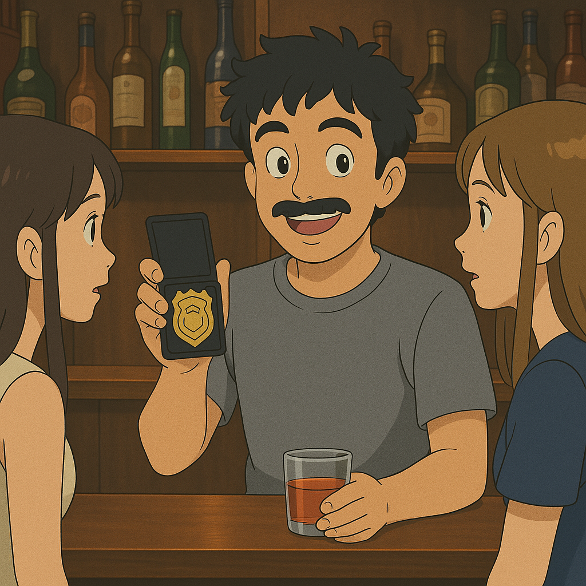

A Short King's Story
The Legend Begins
"It was at Bayside Landing, after a night of volleyball at AVA.
Not all things are invented—some are discovered."
Malcolm Flack… had the face of a short guy.
THE SHORT KING
"But this wasn't just a nickname.
It was a calling."
San Diego Police Academy

- Not the most disciplined cadet
- Definitely the most charming
- "Community outreach"
- Achievement Unlocked: Flirt with every girl in the academy
The Moment That Changed Everything
Seals, confused and intoxicated, began wandering inland.
The Restroom Standoff
Trapped by Seal

Livestreaming the Encounter
"No Door Too Small. No Seal Too Big."
The Next Step
- From patrol car to policy
- From public restrooms to public office
- From viral livestream to County Councilmember
Campaign Launch
FLACK TO THE FUTURE 2028
VOTE
NOW
NOW
"The Short Kings Champagne Campaign"
Powered by Vision, Fueled by Short King Energy